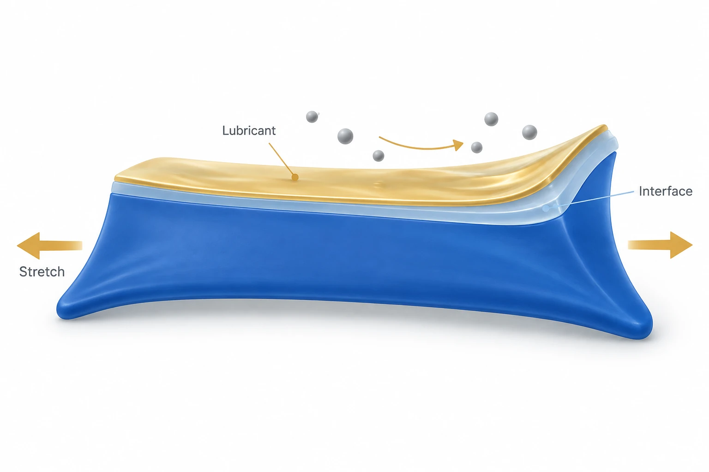

연구 배경과 분류
변형하는 생체재료 표면의 비특이적 부착과 마찰을 줄이는 윤활 코팅이 중심이다. 전기 절연과 보호층 호환성은 패키징의 보조 연결이다.
연구 배경
신축성 기판 위의 항오염 코팅은 표면이 깨지면 기능도 잃을 수 있습니다. L-VIP는 이 변형 문제를 윤활 계면 설계와 연결합니다. 부착 억제는 윤활 계면이 연속적으로 남아 있을 때 의미가 있습니다. 기판이 늘어날 때 틈이 생기면 처음 측정한 표면의 액체 반발성과 실제 변형 상태의 기능이 달라질 수 있습니다.
핵심 접근과 발전
신축성 접착층에 불소계 고분자와 윤활제를 결합합니다. 부착을 억제하는 표면만이 아니라 기판 변형을 따라가는 층 구성이 중요합니다. 접착층은 기판과의 연결을 맡고, 불소계 고분자·윤활액은 외부 물질과 만나는 표면을 구성합니다. 이 역할 분리 때문에 코팅의 부착력, 늘어날 때의 균열과 최외곽 표면의 오염 저항을 각각 평가해야 합니다.

AI 생성 개념도. 늘어나는 기판에 윤활 계면을 유지하려는 L-VIP의 설계 개념을 표현했습니다. 색띠와 화살표는 기능을 단순화한 기호이며 실제 층수·두께·입자 이동을 나타내지 않습니다. 무보충 윤활 수명이나 생체 내 치료 결과를 보여 주는 실험 그림이 아닙니다.
늘어나는 기판과 연속된 윤활 계면이라는 비정량적 설계 개념으로 사용할 수 있습니다. 아래의 AI 생성 표기·범위 제한 캡션을 함께 사용하는 조건의 승인입니다. 실제 L-VIP 층 구조, 제조도, 측정 결과를 재현한 그림으로 승인한 것은 아닙니다. 계면의 연속성과 변형 수용이라는 기능적 관계를 설명하는 자료실 개념 이미지. 제외 범위: 실제 단면·층수·층 두께·분자 구조; 정량 신축성·반복 수·손상 임계값; 입자별 궤적·작용력·살균; 기판 간 직접 비교 성능; 재윤활 없는 체내 수명·치료 효능.
논문 원그림을 복제한 이미지가 아니며, 원그림 재사용 허가를 의미하지 않습니다.
공개 논문의 개념으로 웹 ChatGPT에서 생성하고, 선택적으로 읽은 본문과 명시된 독립 검토 범위 안에서 개념의 일치 여부를 확인했습니다. 전체 본문·보충자료 검증을 뜻하지 않습니다. 표시용 WebP 인코딩 외에 자르기나 내용 편집을 하지 않았습니다.
평가 방법과 조건
본문은 맨 Ecoflex와 L-VIP를 늘릴 때 혈액 방울의 거동을 비교하고, 반복 인장 뒤에는 일반 윤활 주입 코팅과 균열을 대조합니다. 피하 PVA 이식 평가와 전기 절연은 별도의 기능 검증입니다. 혈액 방울이 움직이는 모습은 오염물과 변형된 표면의 접촉을 보여 주고, 현미경의 균열 관찰은 그 기능이 유지되거나 달라지는 구조적 근거를 제공합니다. 조직 반응과 절연 결과를 이 표면 시험 하나에서 추론한 것은 아닙니다.
주요 결과
시험 범위에서 L-VIP는 일반 코팅과 달리 반복 인장 뒤 균열 없이 액체 반발을 유지했습니다. 그러나 허용 변형을 넘으면 결함과 반발 성능 변화가 나타나 무제한 신축성을 뜻하지는 않습니다. 일반 코팅에서 보인 균열과 L-VIP의 표면 유지가 함께 제시되므로 연구의 핵심은 초기 반발각 하나가 아닙니다. 변형 중 계면을 유지하도록 층을 설계한 효과를 비교했다는 데 의미가 있습니다.
한계와 남은 질문
이식 후 항오염·접촉각 평가는 회수한 시료를 PFPE에 다시 담근 뒤 수행했습니다. 따라서 회수한 코팅이 재윤활 후 기능을 보인 결과를 포함하며, 초기 윤활액이 체내에서 보충 없이 그대로 유지되었다는 근거로 읽을 수 없습니다. 이 조건과 함께 단기 조직 반응, 반복 사용 중 윤활액 소실, 불소계 액체의 잔류 문제를 구별해야 합니다. 현재 해설은 관찰된 계면 기능을 설명하며 무보충 이식 수명을 추정하지 않습니다.
관련 외부 연구
Bioinspired self-repairing slippery surfaces with pressure-stable omniphobicity
SLIPS의 윤활액 유지와 L-VIP의 인장 중 계면 유지를 비교한다.
외부 초록의 압력 안정성을 신축 기판의 균열 저항과 동일시하지 않는다.
초록 확인교신저자 확인
서정목 교신 확인아래는 서정목의 교신저자 여부에 관한 확인 기록입니다. 저자 순서나 별표만으로 판정하지 않으며, 본문 내용 검증과 별도로 읽어야 합니다.
- 교신 고지 확인 출처 ↗
Corresponding Author — Jungmok Seo
Jungmok Seo author detail; Corresponding Author label · publisher_author_detail_read
- 본문 확인 범위
- 로컬 게재본 PDF에서 코팅 구조, 변형·균열 및 항오염 결과, 생체 시험, 전기 절연 설명과 11–12쪽 결론을 읽었습니다. 추가로 §2.2의 Figure 2e–j에서 맨 Ecoflex와 반복 인장·일반 코팅 비교를, §2.5의 Figure 5d–f에서 회수 시료를 항오염·접촉각 시험 전에 PFPE에 다시 담근 조건을 확인했습니다. 이는 추가 본문 확인이며 보충자료(SI) 읽기가 아닙니다.
- 보충자료 확인 범위
- 보충자료(SI)는 읽지 않았습니다. 확인된 보충자료 범위는 비어 있으며, SI 전체 검토를 완료한 것으로 표시하지 않습니다.
- 남은 확인
- SI는 읽지 않았습니다. 정량 반복 절연 수명과 윤활액 소실은 추가 조건 검증이 필요합니다. 회수 시료의 PFPE 재침지는 본문에서 확인했으며 무보충 이식 수명을 주장하지 않습니다.
COVERAGE & OUTREACH
보도와 소개
논문과의 연관성을 확인한 소개 자료입니다. 언론 게재는 독립 취재나 실험 결과의 추가 검증을 뜻하지 않습니다.
몸에 넣는 의료기기 감염 억제…유연한 방오코팅 기술 ↗
서정목 연구팀, Advanced Functional Materials, V4D4·불소 고분자로 만든 신축성 방오 코팅이라는 고유 조합이 #72와 일치한다.
본문 확인 기자·날짜·본문을 읽었다. 본문이 연세대 발표를 명시하므로 대학발 기사로 분류한다. 기사상의 기대 효능을 추가 실험 근거로 사용하지 않는다.
미확인 후보와 접근 제한 (1)
미확인 후보 · [공과대학] 서정목 교수팀, 신축성과 유연성을 지닌 방오코팅기술 개발 ↗
검색 발췌의 서정목·김태영, 학술지 및 신축성 방오 코팅 설명이 #72의 후보로 일치한다. 직접 본문 열기가 실패해 확정 항목에서 제외한다.
본문 접근 제한 검색 색인에 표시된 제목·24.04.30 날짜·일부 설명만 읽었다. 웹 도구는 접근 불가를 반환했다.
근거와 확인 범위
로컬 게재본 PDF에서 코팅 구조, 변형·균열 및 항오염 결과, 생체 시험, 전기 절연 설명과 11–12쪽 결론을 읽었습니다. 추가로 §2.2의 Figure 2e–j에서 맨 Ecoflex와 반복 인장·일반 코팅 비교를, §2.5의 Figure 5d–f에서 회수 시료를 항오염·접촉각 시험 전에 PFPE에 다시 담근 조건을 확인했습니다. 이는 추가 본문 확인이며 보충자료(SI) 읽기가 아닙니다.
추가 해설은 아래에 명시한 근거 범위에서 편집 검토를 승인한 내용입니다. 모든 본문·보충자료의 검증 완료를 뜻하지 않습니다.
- 추가 본문 확인 범위
- 로컬 게재본 PDF에서 코팅 구조, 변형·균열 및 항오염 결과, 생체 시험, 전기 절연 설명과 11–12쪽 결론을 읽었습니다. 추가로 §2.2의 Figure 2e–j에서 맨 Ecoflex와 반복 인장·일반 코팅 비교를, §2.5의 Figure 5d–f에서 회수 시료를 항오염·접촉각 시험 전에 PFPE에 다시 담근 조건을 확인했습니다. 이는 추가 본문 확인이며 보충자료(SI) 읽기가 아닙니다.
- 추가 보충자료 확인 범위
- 보충자료(SI)는 읽지 않았습니다. 확인된 보충자료 범위는 비어 있으며, SI 전체 검토를 완료한 것으로 표시하지 않습니다.
- 원본 공개 논문 목록 ↗ · #72 · 2026-10-03
- Crossref metadata ↗: Crossref에 등록된 공개 서지 메타데이터만 확인했습니다. 출판사 페이지·초록·본문을 읽었다는 뜻이 아니며, 학교 Chrome 전문 검증은 보류입니다. Crossref 대표 출판 연도는 2023이나, 온라인/인쇄 출판일 중 원본 연도 2024도 확인되어 실질 불일치로 분류하지 않았습니다. license_urls는 등록된 링크 목록이며 본문·그림 재배포 허가를 의미하지 않습니다. TDM 또는 게시 정책 링크가 포함될 수 있습니다.
- Lubricant-Infused Polymeric Interfaces: A Stretchable and Anti-Fouling Surface for Implantable Biomaterials ↗
public_publisher_abstract · Abstract - Lubricant-Infused Polymeric Interfaces: A Stretchable and Anti-Fouling Surface for Implantable Biomaterials ↗
local_pdf_read · BLS17_AdvFunctMater_2024_Antifouling_Interface_MAIN.pdf; Results; pp. 11–12 Conclusion; crack formation test; title and DOI matched; PDF not redistributed - Lubricant‐Infused Polymeric Interfaces: A Stretchable and Anti‐Fouling Surface for Implantable Biomaterials ↗
local_pdf_read · Results; pp. 11–12 Conclusion; crack formation test; title and DOI matched; PDF not redistributed - Lubricant‐Infused Polymeric Interfaces: A Stretchable and Anti‐Fouling Surface for Implantable Biomaterials ↗
local_pdf_read · Local PDF §2.2, Fig. 2e–j (bare Ecoflex; cyclic stretching versus conventional coating); §2.5, Fig. 5d–f (retrieved samples immersed again in PFPE before antifouling/contact-angle testing) - Lubricant‐Infused Polymeric Interfaces: A Stretchable and Anti‐Fouling Surface for Implantable Biomaterials ↗
independent_reviewer_selected_main_text · Local published PDF §2.2 Fig.2e–j and §2.5, retrieved-sample PFPE reimmersion. - 추가 해설의 근거 ↗
연구 배경 · BLS17_AdvFunctMater_2024_Antifouling_Interface_MAIN.pdf; Results; pp. 11–12 Conclusion; crack formation test; title and DOI matched; PDF not redistributed · local_pdf_read - 추가 해설의 근거 ↗
핵심 접근과 발전 · BLS17_AdvFunctMater_2024_Antifouling_Interface_MAIN.pdf; Results; pp. 11–12 Conclusion; crack formation test; title and DOI matched; PDF not redistributed · local_pdf_read - 추가 해설의 근거 ↗
관련 연구와의 연결 · Bioinspired self-repairing slippery surfaces with pressure-stable omniphobicity; DOI 10.1038/nature10447; previously verified abstract · abstract - 추가 해설의 근거 ↗
평가 방법과 조건 · Local PDF §2.2, Fig. 2e–j (bare Ecoflex; cyclic stretching versus conventional coating); §2.5, Fig. 5d–f (retrieved samples immersed again in PFPE before antifouling/contact-angle testing) · local_pdf_read - 추가 해설의 근거 ↗
주요 결과 · Local PDF §2.2, Fig. 2e–j (bare Ecoflex; cyclic stretching versus conventional coating); §2.5, Fig. 5d–f (retrieved samples immersed again in PFPE before antifouling/contact-angle testing) · local_pdf_read - 추가 해설의 근거 ↗
한계와 남은 질문 · Local PDF §2.2, Fig. 2e–j (bare Ecoflex; cyclic stretching versus conventional coating); §2.5, Fig. 5d–f (retrieved samples immersed again in PFPE before antifouling/contact-angle testing) · local_pdf_read